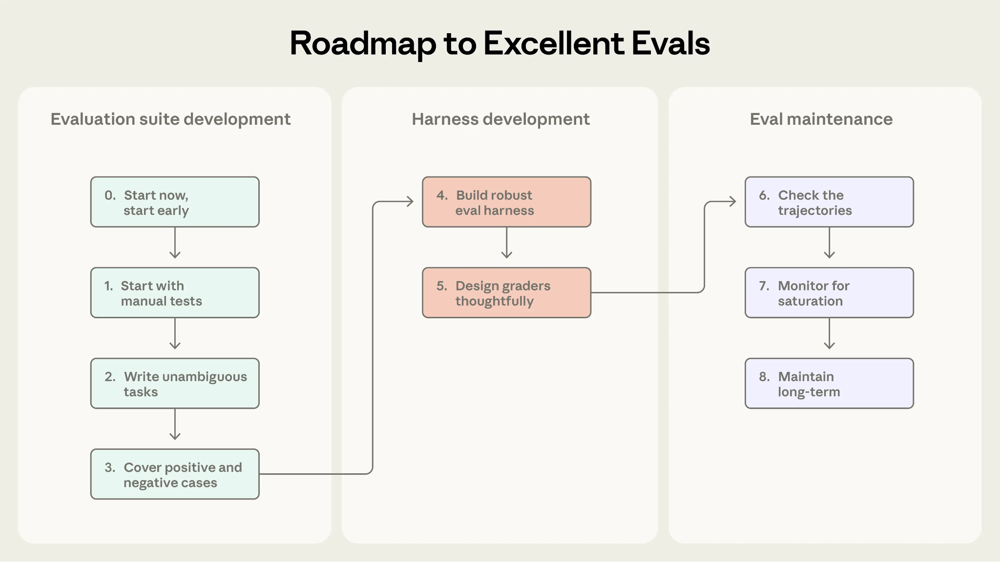

가장 자주 받는 질문 중 하나는 "이 작업에는 어떤 모델을 골라야 하나요?"이다. 더 많은 모델 클래스와 버전을 내놓을수록 이 질문에 대한 답은 더 미묘해졌다.
이 글은 각 모델 클래스에 대한 설명, 모델을 고를 때 던져야 할 핵심 질문, 그 밖의 모범 사례 등 그 세부 내용을 다룬다.
다만 세부적인 뉘앙스는 잠시 접어두고, 우리의 기본 권장 사항은 이렇다. 현재 사용 가능한 가장 지능이 높은 모델로 시작하고, 성능과 비용은 노력 수준(effort level)으로 조절하라는 것이다.
작업당 비용은 토큰당 가격이 더 비싸더라도 더 지능이 높은 모델 쪽이 오히려 낮은 경우가 많다. 노력 수준을 낮게 잡았을 때는 특히 그렇다. 더 유능한 모델은 대개 더 적은 턴수와 더 짧은 사고 시간만으로 대부분의 작업을 제대로 해내기 때문이다. 작은 모델로 시작하면 모델 자체의 실패인지 설정(setup)의 실패인지 구분하기 어려워진다는 문제도 있다.
물론 지연 시간이나 비용에 더 민감한 사용 사례가 생기면, 하위 등급 모델들을 테스트해 가며 자신에게 맞는 최적점을 찾아갈 수 있다.
일부 조직은 반대로 가장 비용 효율적인 모델로 시작해 품질 기준을 충족할 때까지 상위 클래스로 옮겨가는 방식을 택하기도 한다. 모델 선택에 관한 문서에는 이 두 가지 방향의 접근법을 모두 담아두었다.
Mythos는 Anthropic의 가장 유능한 모델 클래스로, 전 영역에 걸쳐 프런티어급 역량을 갖췄다. 이 모델 클래스는 특히 코딩, 장시간 실행되는 에이전트 작업, 그리고 AI가 지금까지 안정적으로 처리하지 못했던 문제를 푸는 데 강하다.
Mythos 클래스는 동일한 기반 모델을 두 가지 패키지로 내놓는다. Claude Mythos는 이중 용도(dual-use)의 사이버보안·생물학 작업을 다루는 신뢰받는 조직을 위한 것이고, Claude Fable은 일반 대중이 안전하게 쓸 수 있도록 추가 안전장치를 더해 패키징한 것이다. 두 모델 모두 안전한 사용을 위해 제한된 데이터 보존(limited data retention)을 요구한다.
Opus는 추론이 많이 필요한 엔터프라이즈 작업을 위한 강력한 모델 클래스다. Opus 모델은 지식 노동 영역의 GDPval-AA, 에이전틱 코딩 영역의 Terminal-Bench 2.1 같은 업계 주요 벤치마크에서 꾸준히 선두권에 든다.
Opus와 Fable 사이의 선택은 겉보기엔 명확하지 않을 수 있다. 둘 다 코딩, 장시간 실행 에이전트, 지식 노동에서 뛰어나기 때문이다. 실제 상황에서는 Fable 같은 더 큰 모델이 Opus 같은 모델과 벤치마크 점수는 비슷하더라도 더 많은 지혜와 창의성, 글쓰기 능력을 보이는 경향이 있다.
일반적인 경험칙은 이렇다. 평가(evals)나 내부 테스트에서 Opus가 특정 작업을 힘겨워한다면 답은 Fable이다. Opus가 이미 품질 기준을 통과한다면, 속도와 가격 면에서 Opus가 더 나은 선택일 수 있다.
Sonnet은 일상적인 작업을 위한 다재다능한 모델 클래스다. 멀티 에이전트 오케스트레이션 환경에서의 대량 서브 에이전트를 포함해, 가장 폭넓은 범용 사용 사례에서 성능·비용·속도의 균형을 제공한다.
Haiku는 가장 저렴하고 가장 빠른 모델 클래스다. Haiku 모델은 지연 시간과 비용이 중요한 고빈도 워크로드를 위해 설계됐다.
우리 모델 클래스들은 특정 한 종류의 작업에만 특화돼 있지 않다. 재무에는 이 모델, 과학에는 저 모델을 추천하는 식이 아니다. 모든 Claude 모델은 코딩, 에이전틱 작업, 지식 노동 같은 영역에서 뛰어나도록 훈련된다.
모델 클래스 간의 핵심 차이는 얼마나 어려운 문제를 안정적으로 감당할 수 있는지, 그리고 그 역량에 어떤 가격과 속도의 대가가 따르는지에 있다. 모델을 고를 때는 다음을 물어보자.
이 작업은 얼마나 어려운가? 보통 시간이 많이 걸리거나, 여러 단계를 거치거나, 이전까지 풀리지 않았던 문제라면 더 유능한 모델 클래스가 적합하다.
지연 시간 요구 사항은 어떤가? 고빈도의 고객 대면 워크로드에 모델이 관여한다면, Sonnet이 최선의 선택인 경우가 많다.
접근 제약은 어떤가? Mythos는 Project Glasswing 산하 조직에만 제공된다. 모든 조직이 모든 역할에 모든 모델 클래스를 열어주는 것은 아니다.
단위 경제성(unit economics)은 어떤가? 평가에서 해당 작업이 만족스럽게 완료된다는 결과가 나온다면, 더 큰 물량의 프로덕션에는 하위 클래스 모델이 더 적합할 수 있다. 모델은 토큰당 가격이 서로 다르며, 역량과 노력 수준에 따라 작업당 가격도 달라진다.
노력 수준(effort level) 역시 품질·속도·비용의 균형에 영향을 준다. 상위 클래스 모델을 높은 노력 수준으로 쓰면 최상의 성능을 얻을 수 있고, 상위 클래스 모델을 낮은 노력 수준으로 쓰면 때로는 작은 모델보다 더 효율적일 수 있다.


더 자세한 내용은 Claude Code에서 Claude 모델과 노력 수준 고르기를 참고하라.
어드바이저 전략(advisor strategy)은 더 빠르고 비용이 낮은 작업자(worker) 모델이, 자신의 계획을 점검하고 결과물을 평가받기 위해 더 지능이 높은 모델을 호출할 수 있게 하는 방식으로, 성능 향상으로 이어진다.
실행 모델이 필요할 때만 코칭을 받는 이 방식은 성능을 상당히 끌어올린다. 예를 들어, SWE-bench Pro에서 Fable 5 어드바이저를 붙인 Sonnet 5는 작업 전체를 Fable 5로 수행할 때 드는 비용의 63% 만으로 Fable 5 점수의 90% 이내에 도달한다.
모델의 역량이 필요한 수준을 충족하는지 확인하는 흔한 방법 두 가지는 표준 벤치마크를 쓰는 것과 커스텀 평가(custom evaluation)를 쓰는 것이다.
벤치마크는 정해진 작업이나 시나리오의 집합으로, 흔히 특정 도메인에 대해 정답이 알려져 있다. 이는 여러 모델 클래스와 제공업체(provider)에 걸쳐 역량을 비교하는 데 방향을 잡아주는 유용한 지표가 될 수 있다. 문제는 Opus나 Fable처럼 강력한 모델을 평가할 때 생긴다. 이런 모델은 테스트의 거의 모든 문제를 풀어버리기 때문이다(흔히 포화(saturation)라고 부른다).
이런 경우 우리는 조직이 실제 워크로드에서 모델을 써보거나, 자체 평가로 테스트해서 어떤 모델이 맞는지 판단할 것을 권한다. 통상 평가는 프로덕션에서 뽑아낸 엄선된 문제들로 구성된다. 여기에는 지금 쓰는 도구가 부족함을 드러내는 어려운 작업과, 팀이 직접 정의한 성공 기준이 포함된다.

바로 이 지점에서 프런티어 모델들의 역량과 창의성이 다른 모델들, 그리고 서로 간에도 갈라지기 시작한다. 우리는 커스텀 에이전트 평가를 만드는 모범 사례에 대해서도 자세히 다룬 바 있다.
AI 모델 선택에는 만능 정답이 없다. 그래서 우리는 여러 모델 클래스를 제공한다. 결국 모델을 고르는 최선의 방법은 각 모델 클래스의 기본을 이해하고 자신의 사용 사례를 깊이 이해하는 것이다. 이는 곧 탄탄한 평가를 만들고, 유지하고, 배포하는 일을 뜻한다.